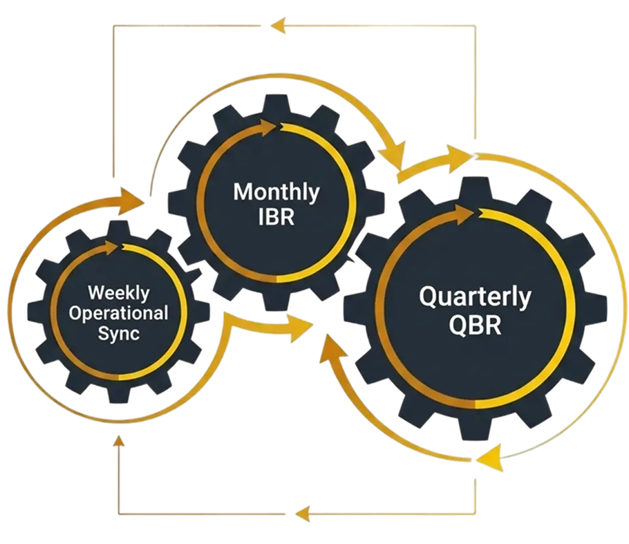

We
have now designed the full architectural blueprint for transformation: a
cascade of KPIs, a portfolio of initiatives, a map of executable processes, and
a structure of clear ownership. But a blueprint is static. To bring it to life,
we need an enginean operating system that powers decision-making, ensures
accountability, and drives the transformation forward with purpose and rhythm.
That system is Governance .
Effective
governance is not about bureaucracy or endless meetings. It is the disciplined,
data-driven framework that defines how decisions are made , who makes them, and
how performance is tracked and managed in real time. Without strong governance,
even the best-designed strategy will drift amidst the pressures of daily
operations. With it, transformation becomes predictable, proactive , and
relentlessly focused on outcomes.
Beyond Bureaucracy
In
many organizations, "governance" is perceived as a barrier to speed.
In a well-architected transformation, the opposite is true. Governance creates
speed by replacing political debate and hallway conversations with transparent,
data-driven forums. It fosters a culture of accountability where problems are
raised early and solved collaboratively.
The
core functions of transformation governance are:
A Structured Decision-Making
Cadence: A rhythm of meetings, from weekly operational syncs to quarterly
strategic reviews, each with a clear purpose, agenda, and set of
attendees.
Clarified Role-Based
Accountability: A clear understanding of who is responsible for providing
data, who presents it, and who has the authority to make specific
decisions at each level.
Data-Driven Performance
Thresholds: Pre-defined triggers for corrective action. A KPI deviating by
more than 10%, for instance, is automatically escalated removing emotion
and subjectivity from problem identification.

Figure 1: The Rhythm of Governance - Weekly Syncs to Quarterly Strategy
The Integrated
80: Business Review
The
power of this framework converges in a central, indispensable meeting: the Integrated
Business Review (IBR) , typically held monthly. This is not a series of separate
status updates from different departments. It is a single, unified forum where
Strategy, the Transformation Management Office (PMO), and Operations leaders
review performance and forecasts together .
The
agenda of the IBR explicitly connects the past, present, and future:
Performance Review: "How
did our KPIs perform against the forecast?"
Deliverable Impact: "The
PMO reports that the 'Risk Engine' initiative went live. Have we seen the
expected improvement in the ' containers auto-cleared' process
metric?"
Forward-Looking Forecast:
"What do the leading indicators and initiative roadmaps tell us about
our ability to hit next quarter's targets?"
This
integrated view ensures that every deliverable is tied to a KPI, and every KPI
variance is examined in the context of the initiatives designed to influence
it.
Governance as the
Primary Risk Management Forum
The
governance cadence is the primary mechanism for managing transformation risk.
Problems in complex initiatives are inevitable; failure is not. Failure occurs
when problems are not made visible to the right people at the right time.
Weekly Stand-upsmanage delivery
risks at the project level.
Monthly IBRsmanage operational
and integration risks across teams.
Quarterly Business Reviews
(QBRs)are the forum for managingstrategic risk. This is where leadership
reviews the highest-level leading indicators, assesses if the overall
transformation is on track to meet its strategic objectives, and makes
major decisions on reprioritizing portfolios or reallocating capital.
Powering Governance
with the Digital Twin
The
governance framework is where the organization's Digital Twin is put to work.
The dashboards showing RAG statuses, KPI trends, and portfolio heat maps are
all visualizations pulled directly from this living model.
This
is where a GenAI interface becomes a revolutionary tool. In a QBR, instead of
analyzing static reports, a leader could ask:
"The 'FDI project
approvals' KPI is lagging. Trace the issue to its root cause." The
GenAI could instantly follow the data chain from the L1 KPI, through the
L2 initiatives, down to a specific delayed L3 deliverable.
"We need to shift resources
to accelerate the new platform launch. Simulate the risk this introduces
to other programs in the portfolio."
Key Takeaways
Transformation governance is not
bureaucracy; it is theoperating systemthat ensures accountability and
reliability.
It functions through a
structuredcadence of integrated reviews(Weekly, Monthly, QBR) that bring
Strategy, PMO, and Operations together.
Its primary function
isproactiverisk management, making problems visible early so that
data-driven corrective actions can be taken .
Effective governance is powered
by theDigitalTwin, using its data to inform decisions and leveraging GenAI
to provide real-time, predictive insights.